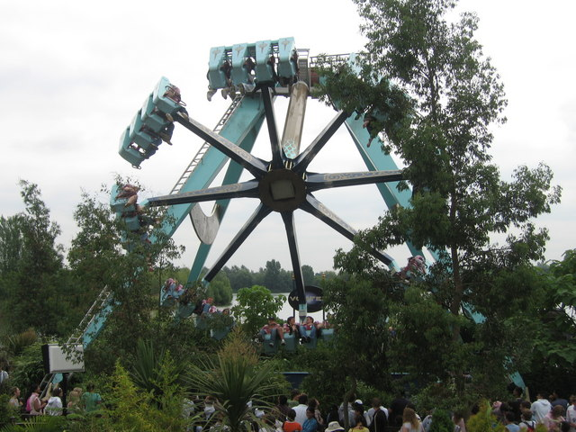
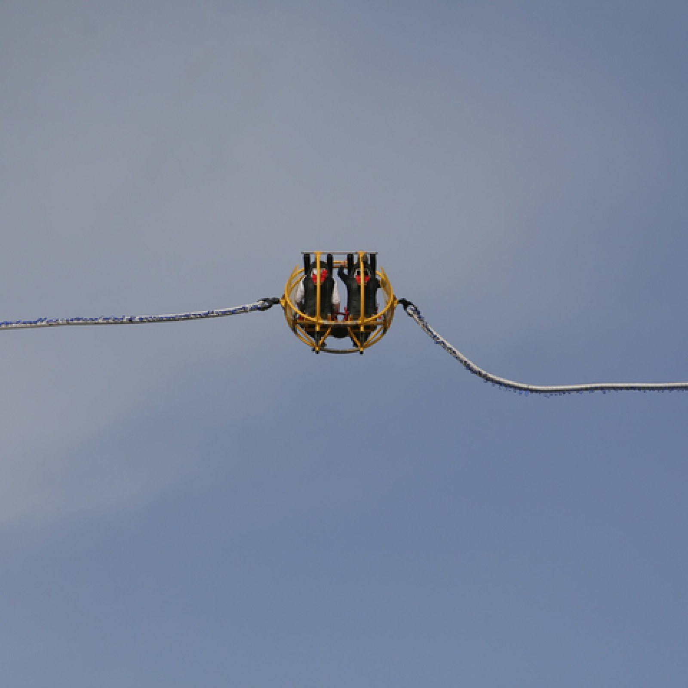

number 5 the sand blaster
>*information* the sand blaster was popular but it
had to be shut down because of a really bad accident
that caused the ride to be shut down because of a derailment
this meant that the ride had to be closed but before this accident inscepters
had to close it because of many violations in the ride they found something strange it goes on
22 miles per hour and it was extremely fast enough to derail this was number 10 on most dangerous
rides that had to be shut down onto number 9
before the accident

after the accident
number 4 the vortex >:)
*information* the vortex was one of those swinging
type of a coaster but something stupid happen the ride made
just a piece of foam fall and they closed it down because of
that is stupid just for a piece of foam nothing really much happened
but it really wasn't permently shut down
before the foam falling

after the foam falling
number 3 the vertical accelerator
*imformation* it was one of those rides that launched you up in the air
going 50 mph this was known as tvaa or as the verticaal accelerator accident basically
what happened was some guys were boarding the ride intil the holder fell the guy almost l
auched this was a really bad accident this was permently shut down
before the holder fell

after the holder fell
number 2 1902 cannon coaster
*imformation* in 1902 people made a really dumb roller coaster
it was basically you were about to be shot out of a cannon but
there was one problem why did they remove the rails i mean this was stupid because of this we wont see that roller coaster

number 1 the tsumani
*information* this is the crazist accident it was a popluar
roller coaster back in mexico intil a tragic accident happened
it was a derailment but a really bad one 2 adults and 8 children
were killed by this evil roller coaster this was also permantly
closed and thus ends the top 5 roller coasters
BEFORE THE accident
after the accident